1. Levenberg Marquardt Fitting#
1.1. Conventions#
S0 Signal for unbound state
S1 Signal for bound state
K equilibrium constant (Kd or pKa)
order data from unbound to bound (e.g. cl: 0–>150 mM; pH 9–>5)
[1]:
import arviz as az
import corner
import lmfit
import matplotlib.pyplot as plt
import numpy as np
import pandas as pd
import scipy
import seaborn as sb
from clophfit.binding.fitting import Dataset, fit_binding_glob
from clophfit.binding.plotting import plot_emcee, print_emcee
%load_ext autoreload
%autoreload 2
1.2. Single Cl titration.#
[2]:
df = pd.read_table("../../tests/data/copyIP.txt")
sb.scatterplot(data=df, x="cl", y="F", hue=df.cl, palette="crest", s=200)
[2]:
<Axes: xlabel='cl', ylabel='F'>
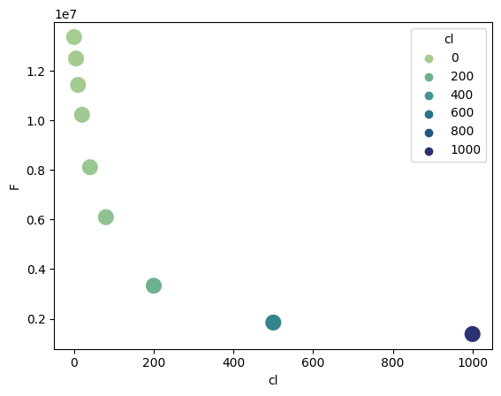
In general we can use either lmfit.minimize() -> res or lmfit.Minimizer -> mini.
[3]:
def residual(pars, x, y=None):
S0 = pars["S0"]
S1 = pars["S1"]
Kd = pars["Kd"]
model = (S0 + S1 * x / Kd) / (1 + x / Kd)
if y is None:
return model
return y - model
params = lmfit.Parameters()
params.add("S0", value=df.F[0])
params.add("S1", value=100)
params.add("Kd", value=50, vary=True)
res = lmfit.minimize(residual, params, args=(df.cl, df.F))
xdelta = (df.cl.max() - df.cl.min()) / 500
xfit = np.arange(df.cl.min() - xdelta, df.cl.max() + xdelta, xdelta)
yfit = residual(res.params, xfit)
print(lmfit.fit_report(res.params))
plt.plot(df.cl, df.F, "o", xfit, yfit, "-")
[[Variables]]
S0: 13408867.8 +/- 87130.3362 (0.65%) (init = 1.33579e+07)
S1: 563537.064 +/- 106411.960 (18.88%) (init = 100)
Kd: 58.3187767 +/- 2.24671605 (3.85%) (init = 50)
[[Correlations]] (unreported correlations are < 0.100)
C(S1, Kd) = -0.7123
C(S0, Kd) = -0.6562
C(S0, S1) = +0.2747
[3]:
[<matplotlib.lines.Line2D at 0x7f552ca79cd0>,
<matplotlib.lines.Line2D at 0x7f552ca93790>]
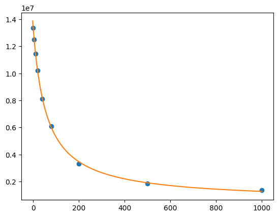
[4]:
mini = lmfit.Minimizer(residual, params, fcn_args=(df.cl, df.F))
res = mini.minimize()
ci, tr = lmfit.conf_interval(mini, res, sigmas=[0.68, 0.95], trace=True)
print(lmfit.ci_report(ci, with_offset=False, ndigits=2))
print(lmfit.fit_report(res, show_correl=False, sort_pars=True))
95.00% 68.00% _BEST_ 68.00% 95.00%
S0:13197616.3413314946.3513408867.7913503300.3813622729.13
S1:300911.47447991.63563537.06677869.66819977.61
Kd: 53.13 55.96 58.32 60.79 64.07
[[Fit Statistics]]
# fitting method = leastsq
# function evals = 17
# data points = 9
# variables = 3
chi-square = 8.3839e+10
reduced chi-square = 1.3973e+10
Akaike info crit = 212.594471
Bayesian info crit = 213.186145
[[Variables]]
Kd: 58.3187767 +/- 2.24671605 (3.85%) (init = 50)
S0: 13408867.8 +/- 87130.3362 (0.65%) (init = 1.33579e+07)
S1: 563537.064 +/- 106411.960 (18.88%) (init = 100)
[5]:
names = res.params.keys()
i = 0
gs = plt.GridSpec(4, 4)
sx = {}
sy = {}
for fixed in names:
j = 0
for free in names:
if j in sx and i in sy:
ax = plt.subplot(gs[i, j], sharex=sx[j], sharey=sy[i])
elif i in sy:
ax = plt.subplot(gs[i, j], sharey=sy[i])
sx[j] = ax
elif j in sx:
ax = plt.subplot(gs[i, j], sharex=sx[j])
sy[i] = ax
else:
ax = plt.subplot(gs[i, j])
sy[i] = ax
sx[j] = ax
if i < 3:
plt.setp(ax.get_xticklabels(), visible=True)
else:
ax.set_xlabel(free)
if j > 0:
plt.setp(ax.get_yticklabels(), visible=False)
else:
ax.set_ylabel(fixed)
rest = tr[fixed]
prob = rest["prob"]
f = prob < 0.96
x, y = rest[free], rest[fixed]
ax.scatter(x[f], y[f], c=1 - prob[f], s=25 * (1 - prob[f] + 0.5))
ax.autoscale(1, 1)
j += 1
i += 1
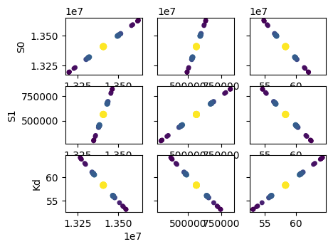
The plots shown below, akin to the examples provided in lmfit documentation, are computationally intensive. They operate under the assumption of a parabolic parameter space. However, it’s worth noting that these plots provide similar information to that yielded by a Monte Carlo simulation.
[6]:
names = list(res.params.keys())
plt.figure()
for i in range(3):
for j in range(3):
indx = 9 - j * 3 - i
ax = plt.subplot(3, 3, indx)
ax.ticklabel_format(style="sci", scilimits=(-2, 2), axis="y")
# set-up labels and tick marks
ax.tick_params(labelleft=False, labelbottom=False)
if indx in (1, 4, 7):
plt.ylabel(names[j])
ax.tick_params(labelleft=True)
if indx == 1:
ax.tick_params(labelleft=True)
if indx in (7, 8, 9):
plt.xlabel(names[i])
ax.tick_params(labelbottom=True)
[label.set_rotation(45) for label in ax.get_xticklabels()]
if i != j:
x, y, m = lmfit.conf_interval2d(mini, res, names[i], names[j], 20, 20)
plt.contourf(x, y, m, np.linspace(0, 1, 10))
x = tr[names[i]][names[i]]
y = tr[names[i]][names[j]]
pr = tr[names[i]]["prob"]
s = np.argsort(x)
plt.scatter(x[s], y[s], c=pr[s], s=30, lw=1)
else:
x = tr[names[i]][names[i]]
y = tr[names[i]]["prob"]
t, s = np.unique(x, True)
f = scipy.interpolate.interp1d(t, y[s], "slinear")
xn = np.linspace(x.min(), x.max(), 50)
plt.plot(xn, f(xn), lw=1)
plt.ylabel("prob")
ax.tick_params(labelleft=True)
plt.tight_layout()
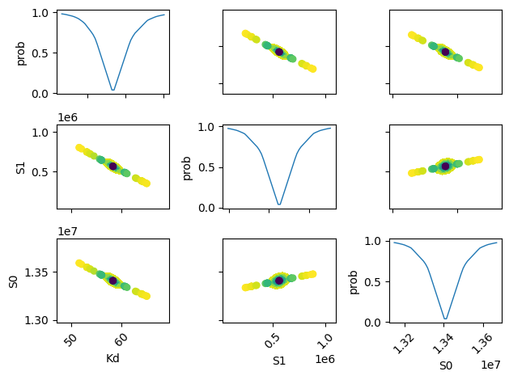
[7]:
lmfit.report_fit(res.params, min_correl=0.25)
ci, trace = lmfit.conf_interval(mini, res, sigmas=[1, 2], trace=True)
lmfit.printfuncs.report_ci(ci)
fig, axes = plt.subplots(2, 2, figsize=(12.8, 9.6), sharey=True)
cx1, cy1, prob = trace["S0"]["S0"], trace["S0"]["Kd"], trace["S0"]["prob"]
cx2, cy2, prob2 = trace["S1"]["S1"], trace["S1"]["Kd"], trace["S1"]["prob"]
axes[0][0].scatter(cx1, cy1, c=prob, s=30)
axes[0][0].set_xlabel("S0")
axes[0][0].set_ylabel("Kd")
axes[0][1].scatter(cx2, cy2, c=prob2, s=30)
axes[0][1].set_xlabel("S1")
cx, cy, grid = lmfit.conf_interval2d(mini, res, "S0", "Kd", 30, 30)
ctp = axes[1][0].contourf(cx, cy, grid, np.linspace(0, 1, 11))
fig.colorbar(ctp, ax=axes[1][0])
axes[1][0].set_xlabel("S0")
axes[1][0].set_ylabel("Kd")
cx, cy, grid = lmfit.conf_interval2d(mini, res, "S1", "Kd", 30, 30)
ctp = axes[1][1].contourf(cx, cy, grid, np.linspace(0, 1, 11))
fig.colorbar(ctp, ax=axes[1][1])
axes[1][1].set_xlabel("S1")
axes[1][1].set_ylabel("Kd")
[[Variables]]
S0: 13408867.8 +/- 87130.3362 (0.65%) (init = 1.33579e+07)
S1: 563537.064 +/- 106411.960 (18.88%) (init = 100)
Kd: 58.3187767 +/- 2.24671605 (3.85%) (init = 50)
[[Correlations]] (unreported correlations are < 0.250)
C(S1, Kd) = -0.7123
C(S0, Kd) = -0.6562
C(S0, S1) = +0.2747
95.45% 68.27% _BEST_ 68.27% 95.45%
S0:-217226.68396-94491.4465413408867.78780+95008.79622+219988.97145
S1:-270193.31665-116252.05686563537.06417+115024.41865+263650.82003
Kd: -5.32812 -2.37783 58.31878 +2.48963 +5.92424
[7]:
Text(0, 0.5, 'Kd')
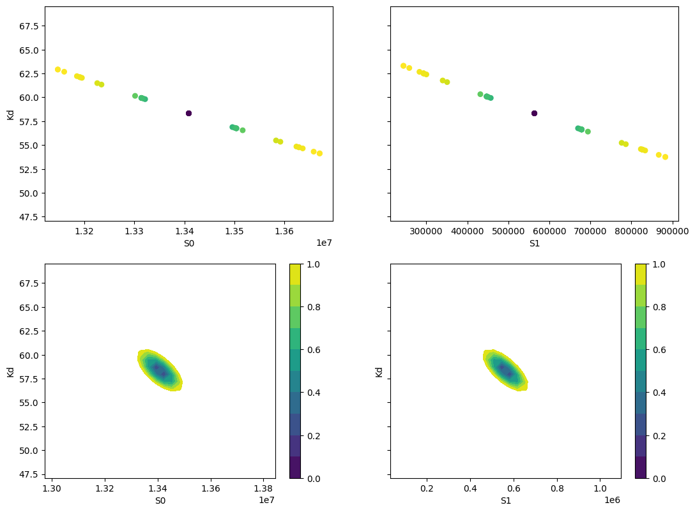
[8]:
x, y, grid = lmfit.conf_interval2d(mini, res, "S0", "S1", 30, 30)
plt.contourf(x, y, grid, np.linspace(0, 1, 11))
plt.xlabel("S0")
plt.colorbar()
plt.ylabel("S1")
[8]:
Text(0, 0.5, 'S1')
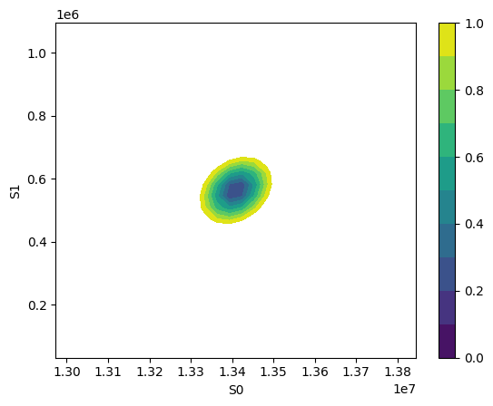
1.2.1. Using clophfit.binding#
[9]:
ds = Dataset(df["cl"].to_numpy(), df["F"].to_numpy())
f_res = fit_binding_glob(ds, weighting=True)
f_res.figure
[9]:
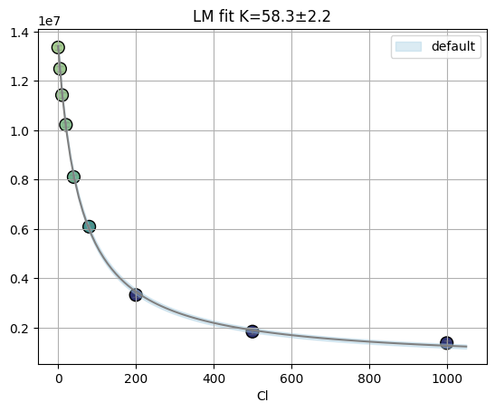
[10]:
emcee_res = f_res.mini.emcee(steps=400, burn=50, workers=8)
print(plot_emcee(emcee_res)[1])
100%|████████████████████████████████████████████████████████████████████████████████████████████████████████████████████████████████████████████████████████| 400/400 [00:04<00:00, 89.58it/s]
The chain is shorter than 50 times the integrated autocorrelation time for 3 parameter(s). Use this estimate with caution and run a longer chain!
N/50 = 8;
tau: [23.92586381 44.3333056 43.89306553]
[49.5, 61.5]
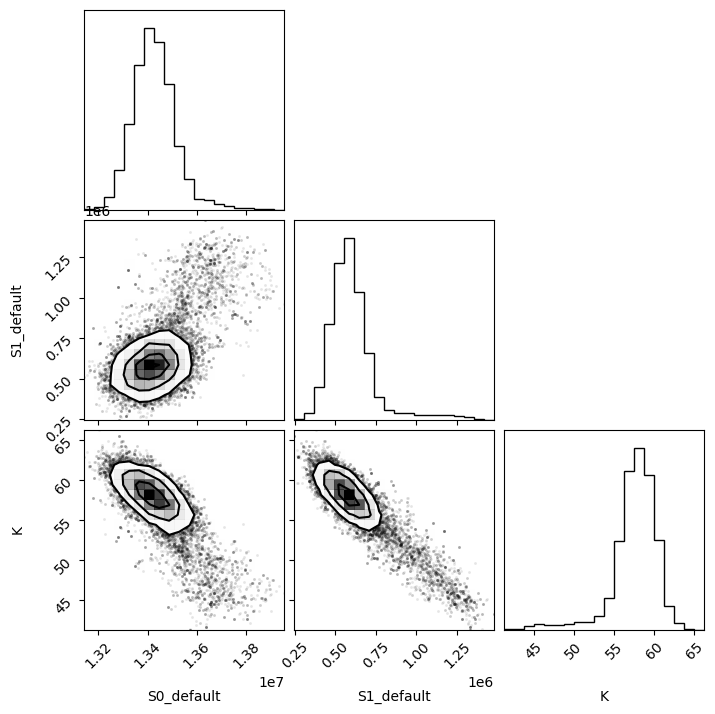
1.3. Fit titration with multiple datasets#
For example data collected with multiple labelblocks in Tecan plate reader.
“A01”: pH titration with y1 and y2.
[11]:
df = pd.read_csv("../../tests/data/A01.dat", sep=" ", names=["x", "y1", "y2"])
df = df[::-1].reset_index(drop=True)
df
[11]:
| x | y1 | y2 | |
|---|---|---|---|
| 0 | 9.030000 | 29657.0 | 22885.0 |
| 1 | 8.373333 | 35200.0 | 16930.0 |
| 2 | 7.750000 | 44901.0 | 9218.0 |
| 3 | 7.073333 | 53063.0 | 3758.0 |
| 4 | 6.460000 | 54202.0 | 2101.0 |
| 5 | 5.813333 | 54851.0 | 1542.0 |
| 6 | 4.996667 | 51205.0 | 1358.0 |
1.3.1. lmfit of single y1 using analytical Jacobian#
It computes the Jacobian of the fz. Mind that the residual (i.e. y - fz) will be actually minimized.
[12]:
import sympy
x, S0_1, S1_1, K = sympy.symbols("x S0_1 S1_1 K")
f = (S0_1 + S1_1 * 10 ** (K - x)) / (1 + 10 ** (K - x))
print(sympy.diff(f, S0_1))
print(sympy.diff(f, S1_1))
print(sympy.diff(f, K))
1/(10**(K - x) + 1)
10**(K - x)/(10**(K - x) + 1)
10**(K - x)*S1_1*log(10)/(10**(K - x) + 1) - 10**(K - x)*(10**(K - x)*S1_1 + S0_1)*log(10)/(10**(K - x) + 1)**2
[13]:
x, S0, S1, K = sympy.symbols("x S0 S1 K")
f = S0 + (S1 - S0) * x / K / (1 + x / K)
sympy.diff(f, S0)
[13]:
[14]:
sympy.diff(f, S1)
[14]:
[15]:
sympy.diff(f, K)
[15]:
[16]:
# if is_ph:
f = S0 + (S1 - S0) * 10 ** (K - x) / (1 + 10 ** (K - x))
sympy.diff(f, S0)
[16]:
[17]:
sympy.diff(f, S1)
[17]:
[18]:
sympy.diff(f, K)
[18]:
[19]:
def residual(pars, x, data):
S0 = pars["S0"]
S1 = pars["S1"]
K = pars["K"]
# model = (S0 + S1 * x / Kd) / (1 + x / Kd)
x = np.array(x)
y = np.array(data)
model = (S0 + S1 * 10 ** (K - x)) / (1 + 10 ** (K - x))
if data is None:
return model
return y - model
# Try Jacobian
def dfunc(pars, x, data=None):
S0_1 = pars["S0"]
S1_1 = pars["S1"]
K = pars["K"]
kx = np.array(10 ** (K - x))
return np.array(
[
-1 / (kx + 1),
-kx / (kx + 1),
-kx * np.log(10) * (S1_1 / (kx + 1) - (kx * S1_1 + S0_1) / (kx + 1) ** 2),
]
)
params = lmfit.Parameters()
params.add("S0", value=25000)
params.add("S1", value=50000, min=0.0)
params.add("K", value=7, min=2.0, max=12.0)
mini = lmfit.Minimizer(residual, params, fcn_args=(df.x,), fcn_kws={"data": df.y1})
res = mini.leastsq(Dfun=dfunc, col_deriv=True, ftol=1e-8)
print(lmfit.report_fit(res))
ci = lmfit.conf_interval(mini, res, sigmas=[1, 2, 3])
[[Fit Statistics]]
# fitting method = leastsq
# function evals = 9
# data points = 7
# variables = 3
chi-square = 12308015.2
reduced chi-square = 3077003.79
Akaike info crit = 106.658958
Bayesian info crit = 106.496688
[[Variables]]
S0: 26638.8377 +/- 2455.91825 (9.22%) (init = 25000)
S1: 54043.3592 +/- 979.995977 (1.81%) (init = 50000)
K: 8.06961091 +/- 0.14940678 (1.85%) (init = 7)
[[Correlations]] (unreported correlations are < 0.100)
C(S0, K) = -0.7750
C(S1, K) = -0.4552
C(S0, S1) = +0.2046
None
[20]:
print(lmfit.ci_report(ci, with_offset=False, ndigits=2))
99.73% 95.45% 68.27% _BEST_ 68.27% 95.45% 99.73%
S0:-58596.9018262.4323743.2826638.8429197.6132638.1538999.44
S1:47850.5551309.0552945.1454043.3655156.5456872.9060768.74
K : 7.09 7.67 7.91 8.07 8.23 8.50 9.58
1.3.2. using lmfit with np.r_ trick#
[21]:
def residual2(pars, x, data=None):
K = pars["K"]
S0_1 = pars["S0_1"]
S1_1 = pars["S1_1"]
S0_2 = pars["S0_2"]
S1_2 = pars["S1_2"]
model_0 = (S0_1 + S1_1 * 10 ** (K - x[0])) / (1 + 10 ** (K - x[0]))
model_1 = (S0_2 + S1_2 * 10 ** (K - x[1])) / (1 + 10 ** (K - x[1]))
if data is None:
return np.r_[model_0, model_1]
return np.r_[data[0] - model_0, data[1] - model_1]
params2 = lmfit.Parameters()
params2.add("K", value=7.0, min=2.0, max=12.0)
params2.add("S0_1", value=df.y1[0], min=0.0)
params2.add("S0_2", value=df.y2[0], min=0.0)
params2.add("S1_1", value=df.y1.iloc[-1], min=0.0)
params2.add("S1_2", value=df.y2.iloc[-1], min=0.0)
mini2 = lmfit.Minimizer(
residual2, params2, fcn_args=([df.x, df.x],), fcn_kws={"data": [df.y1, df.y2]}
)
res2 = mini2.minimize()
print(lmfit.fit_report(res2))
ci2, tr2 = lmfit.conf_interval(mini2, res2, sigmas=[0.68, 0.95], trace=True)
print(lmfit.ci_report(ci2, with_offset=False, ndigits=2))
[[Fit Statistics]]
# fitting method = leastsq
# function evals = 37
# data points = 14
# variables = 5
chi-square = 12471473.3
reduced chi-square = 1385719.25
Akaike info crit = 201.798560
Bayesian info crit = 204.993846
[[Variables]]
K: 8.07255029 +/- 0.07600777 (0.94%) (init = 7)
S0_1: 26601.3458 +/- 1425.69913 (5.36%) (init = 29657)
S0_2: 25084.4189 +/- 1337.07982 (5.33%) (init = 22885)
S1_1: 54034.5806 +/- 627.642479 (1.16%) (init = 51205)
S1_2: 1473.57871 +/- 616.944649 (41.87%) (init = 1358)
[[Correlations]] (unreported correlations are < 0.100)
C(K, S0_1) = -0.6816
C(K, S0_2) = +0.6255
C(S0_1, S0_2) = -0.4264
C(K, S1_1) = -0.3611
C(K, S1_2) = +0.3161
C(S0_2, S1_1) = -0.2259
C(S0_1, S1_2) = -0.2155
C(S1_1, S1_2) = -0.1141
95.00% 68.00% _BEST_ 68.00% 95.00%
K : 7.91 7.99 8.07 8.15 8.24
S0_1:23210.9025078.6226601.3528045.4929623.53
S0_2:22232.9723723.9425084.4226514.8828263.75
S1_1:52629.0453378.2454034.5854695.2655460.17
S1_2: 72.04 824.011473.582118.982855.89
[22]:
xfit = np.linspace(df.x.min(), df.x.max(), 100)
yfit0 = residual2(params2, [xfit, xfit])
yfit0 = yfit0.reshape(2, 100)
yfit = residual2(res2.params, [xfit, xfit])
yfit = yfit.reshape(2, 100)
plt.plot(df.x, df.y1, "o", df.x, df.y2, "s")
plt.plot(xfit, yfit[0], "-", xfit, yfit[1], "-")
plt.plot(xfit, yfit0[0], "--", xfit, yfit0[1], "--")
plt.grid(True)
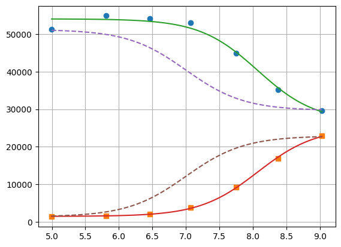
1.3.3. lmfit constraints aiming for generality#
I believe a name convention would be more robust than relying on OrderedDict Params object.
[23]:
"S0_1".split("_")[0]
[23]:
'S0'
[24]:
def exception_fcn_handler(func):
def inner_function(*args, **kwargs):
try:
return func(*args, **kwargs)
except TypeError:
print(
f"{func.__name__} only takes (1D) vector as argument besides lmfit.Parameters."
)
return inner_function
@exception_fcn_handler
def titration_pH(params, pH):
p = {k.split("_")[0]: v for k, v in params.items()}
return (p["S0"] + p["S1"] * 10 ** (p["K"] - pH)) / (1 + 10 ** (p["K"] - pH))
def residues(params, x, y, fcn):
return y - fcn(params, x)
p1 = lmfit.Parameters()
p2 = lmfit.Parameters()
p1.add("K_1", value=7.0, min=2.0, max=12.0)
p2.add("K_2", value=7.0, min=2.0, max=12.0)
p1.add("S0_1", value=df.y1.iloc[0], min=0.0)
p2.add("S0_2", value=df.y2.iloc[0], min=0.0)
p1.add("S1_1", value=df.y1.iloc[-1], min=0.0)
p2.add("S1_2", value=df.y2.iloc[-1])
print(
residues(p1, np.array(df.x), [1.97, 1.8, 1.7, 0.1, 0.1, 0.16, 0.01], titration_pH)
)
def gobjective(params, xl, yl, fcnl):
nset = len(xl)
res = []
for i in range(nset):
pi = {k: v for k, v in params.valuesdict().items() if k[-1] == f"{i+1}"}
res = np.r_[res, residues(pi, xl[i], yl[i], fcnl[i])]
# res = np.r_[res, yl[i] - fcnl[i](parsl[i], x[i])]
return res
print(gobjective(p1 + p2, [df.x, df.x], [df.y1, df.y2], [titration_pH, titration_pH]))
[-29854.26823732 -30530.32007939 -32908.60749879 -39523.42660007
-46381.47878947 -49888.5091843 -50993.25866394]
[ -199.23823732 4667.87992061 11990.69250121 13539.47339993
7820.42121053 4962.3308157 211.73133606 199.04406603
-5080.73278499 -10416.86307191 -9270.08900503 -4075.72045662
-1131.04796128 -211.52498939]
Here single.
[25]:
mini = lmfit.Minimizer(
residues,
p1,
fcn_args=(
df.x,
df.y1,
titration_pH,
),
)
res = mini.minimize()
fit = titration_pH(res.params, df.x)
print(lmfit.report_fit(res))
plt.plot(df.x, df.y1, "o", df.x, fit, "--")
ci = lmfit.conf_interval(mini, res, sigmas=[1, 2])
lmfit.printfuncs.report_ci(ci)
[[Fit Statistics]]
# fitting method = leastsq
# function evals = 25
# data points = 7
# variables = 3
chi-square = 12308015.2
reduced chi-square = 3077003.79
Akaike info crit = 106.658958
Bayesian info crit = 106.496688
[[Variables]]
K_1: 8.06961042 +/- 0.14940740 (1.85%) (init = 7)
S0_1: 26638.8440 +/- 2455.92762 (9.22%) (init = 29657)
S1_1: 54043.3607 +/- 979.995185 (1.81%) (init = 51205)
[[Correlations]] (unreported correlations are < 0.100)
C(K_1, S0_1) = -0.7750
C(K_1, S1_1) = -0.4552
C(S0_1, S1_1) = +0.2046
None
95.45% 68.27% _BEST_ 68.27% 95.45%
K_1 : -0.40197 -0.15948 8.06961 +0.16276 +0.42592
S0_1:-8376.39586-2895.5681226638.84401+2558.76794+5999.32366
S1_1:-2734.30835-1098.2218354043.36069+1113.18102+2829.55353
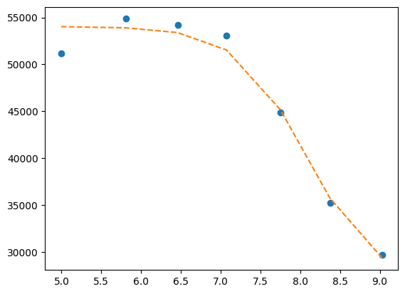
Now global.
[26]:
pg = p1 + p2
pg["K_2"].expr = "K_1"
gmini = lmfit.Minimizer(
gobjective,
pg,
fcn_args=([df.x[:], df.x], [df.y1[:], df.y2], [titration_pH, titration_pH]),
)
gres = gmini.minimize()
print(lmfit.fit_report(gres))
pp1 = {k: v for k, v in gres.params.valuesdict().items() if k.split("_")[1] == f"{1}"}
pp2 = {k: v for k, v in gres.params.valuesdict().items() if k.split("_")[1] == f"{2}"}
xfit = np.linspace(df.x.min(), df.x.max(), 100)
yfit1 = titration_pH(pp1, xfit)
yfit2 = titration_pH(pp2, xfit)
plt.plot(df.x, df.y1, "o", xfit, yfit1, "--")
plt.plot(df.x, df.y2, "s", xfit, yfit2, "--")
[[Fit Statistics]]
# fitting method = leastsq
# function evals = 37
# data points = 14
# variables = 5
chi-square = 12471473.3
reduced chi-square = 1385719.25
Akaike info crit = 201.798560
Bayesian info crit = 204.993846
[[Variables]]
K_1: 8.07255029 +/- 0.07600777 (0.94%) (init = 7)
S0_1: 26601.3458 +/- 1425.69913 (5.36%) (init = 29657)
S1_1: 54034.5806 +/- 627.642480 (1.16%) (init = 51205)
K_2: 8.07255029 +/- 0.07600777 (0.94%) == 'K_1'
S0_2: 25084.4189 +/- 1337.07982 (5.33%) (init = 22885)
S1_2: 1473.57871 +/- 616.944649 (41.87%) (init = 1358)
[[Correlations]] (unreported correlations are < 0.100)
C(K_1, S0_1) = -0.6816
C(K_1, S0_2) = +0.6255
C(S0_1, S0_2) = -0.4264
C(K_1, S1_1) = -0.3611
C(K_1, S1_2) = +0.3161
C(S1_1, S0_2) = -0.2259
C(S0_1, S1_2) = -0.2155
C(S1_1, S1_2) = -0.1141
[26]:
[<matplotlib.lines.Line2D at 0x7f5529e69950>,
<matplotlib.lines.Line2D at 0x7f5529cd1110>]
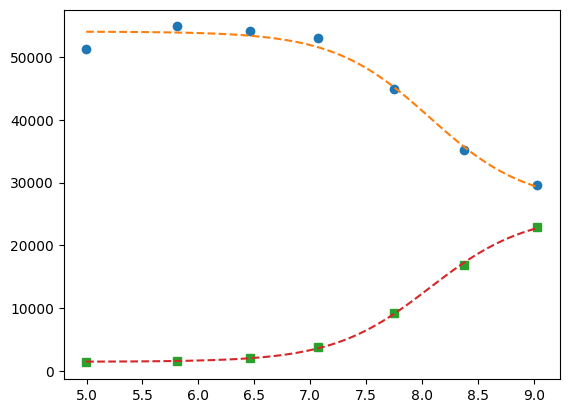
[27]:
ci = lmfit.conf_interval(gmini, gres)
print(lmfit.ci_report(ci, with_offset=False, ndigits=2))
99.73% 95.45% 68.27% _BEST_ 68.27% 95.45% 99.73%
K_1 : 7.77 7.90 7.99 8.07 8.15 8.25 8.38
S0_1:20066.1223118.2625069.3726601.3528053.8229696.8331876.24
S1_1:51504.2152593.4753374.3654034.5854699.1855496.7856630.81
S0_2:20096.2422163.6223716.0825084.4226523.5528350.2131192.55
S1_2:-1078.82 36.05 820.171473.582122.782890.883962.77
To plot ci for the 5 parameters.
[28]:
fig, axes = plt.subplots(1, 4, figsize=(24.2, 4.8), sharey=True)
cx, cy, grid = lmfit.conf_interval2d(gmini, gres, "S0_1", "K_1", 25, 25)
ctp = axes[0].contourf(cx, cy, grid, np.linspace(0, 1, 11))
fig.colorbar(ctp, ax=axes[0])
axes[0].set_xlabel("SA1")
axes[0].set_ylabel("pK1")
cx, cy, grid = lmfit.conf_interval2d(gmini, gres, "S0_2", "K_1", 25, 25)
ctp = axes[1].contourf(cx, cy, grid, np.linspace(0, 1, 11))
fig.colorbar(ctp, ax=axes[1])
axes[1].set_xlabel("SA2")
axes[1].set_ylabel("pK1")
cx, cy, grid = lmfit.conf_interval2d(gmini, gres, "S1_1", "K_1", 25, 25)
ctp = axes[2].contourf(cx, cy, grid, np.linspace(0, 1, 11))
fig.colorbar(ctp, ax=axes[2])
axes[2].set_xlabel("SB1")
axes[2].set_ylabel("pK1")
cx, cy, grid = lmfit.conf_interval2d(gmini, gres, "S1_2", "K_1", 25, 25)
ctp = axes[3].contourf(cx, cy, grid, np.linspace(0, 1, 11))
fig.colorbar(ctp, ax=axes[3])
axes[3].set_xlabel("SB2")
axes[3].set_ylabel("pK1")
[28]:
Text(0, 0.5, 'pK1')
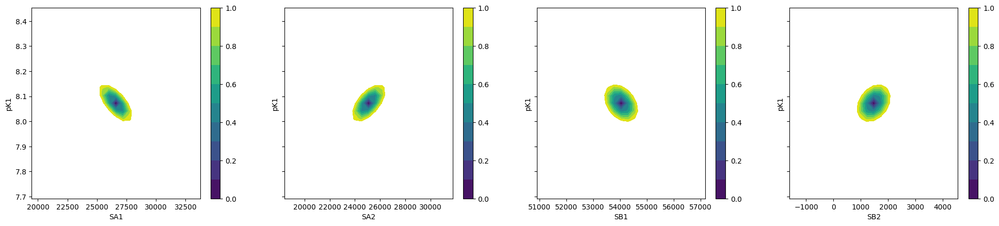
[29]:
plt.plot(np.r_[df.x, df.x], gres.residual, "o")
std = gres.residual.std()
for i in range(-3, 4):
plt.hlines(i * std, 5, 9, alpha=0.4)
print(std)
943.8323579301886
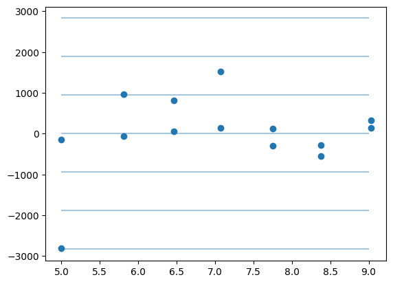
This next block comes from: https://lmfit.github.io/lmfit-py/examples/example_emcee_Model_interface.html?highlight=emcee
1.3.4. lmfit.Model#
It took 9 vs 5 ms. It is not possible to do global fitting. In the documentation it is stressed the need to convert the output of the residue to be 1D vectors.
[30]:
mod = lmfit.models.ExpressionModel("(SB + SA * 10**(pK-x)) / (1 + 10**(pK-x))")
result = mod.fit(np.array(df.y1), x=np.array(df.x), pK=7, SB=7e3, SA=10000)
print(result.fit_report())
[[Model]]
Model(_eval)
[[Fit Statistics]]
# fitting method = leastsq
# function evals = 44
# data points = 7
# variables = 3
chi-square = 12308015.2
reduced chi-square = 3077003.79
Akaike info crit = 106.658958
Bayesian info crit = 106.496688
R-squared = 0.97973543
[[Variables]]
SB: 26638.9314 +/- 2456.05773 (9.22%) (init = 7000)
SA: 54043.3812 +/- 979.984193 (1.81%) (init = 10000)
pK: 8.06960356 +/- 0.14941163 (1.85%) (init = 7)
[[Correlations]] (unreported correlations are < 0.100)
C(SB, pK) = -0.7750
C(SA, pK) = -0.4552
C(SB, SA) = +0.2046
[31]:
plt.plot(df.x, df.y1, "o")
plt.plot(df.x, result.init_fit, "--", label="initial fit")
plt.plot(df.x, result.best_fit, "-", label="best fit")
plt.legend()
[31]:
<matplotlib.legend.Legend at 0x7f55221e0c10>
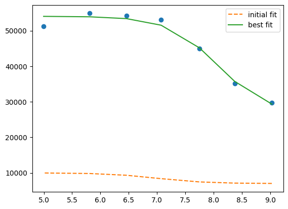
[32]:
print(result.ci_report())
99.73% 95.45% 68.27% _BEST_ 68.27% 95.45% 99.73%
SB:-85235.83517-8376.49744-2895.6555126638.93141+2558.68054+5999.21905+12360.51318
SA:-6192.83614-2734.32819-1098.2423854043.38116+1113.16062+2829.52103+6725.35644
pK: -0.98138 -0.40196 -0.15948 8.06960 +0.16277 +0.42592 +1.50919
which is faster but still I failed to find the way to global fitting.
[33]:
def tit_pH(x, S0, S1, K):
return (S0 + S1 * 10 ** (K - x)) / (1 + 10 ** (K - x))
tit_model1 = lmfit.Model(tit_pH, prefix="ds1_")
tit_model2 = lmfit.Model(tit_pH, prefix="ds2_")
print(f"parameter names: {tit_model1.param_names}")
print(f"parameter names: {tit_model2.param_names}")
print(f"independent variables: {tit_model1.independent_vars}")
print(f"independent variables: {tit_model2.independent_vars}")
tit_model1.set_param_hint("K", value=7.0, min=2.0, max=12.0)
tit_model1.set_param_hint("S0", value=df.y1[0], min=0.0)
tit_model1.set_param_hint("S1", value=df.y1.iloc[-1], min=0.0)
tit_model2.set_param_hint("K", value=7.0, min=2.0, max=12.0)
tit_model2.set_param_hint("S0", value=df.y1[0], min=0.0)
tit_model2.set_param_hint("S1", value=df.y1.iloc[-1], min=0.0)
pars1 = tit_model1.make_params()
pars2 = tit_model2.make_params()
# gmodel = tit_model1 + tit_model2
# result = gmodel.fit(df.y1 + df.y2, pars, x=df.x)
res1 = tit_model1.fit(df.y1, pars1, x=df.x)
res2 = tit_model2.fit(df.y2, pars2, x=df.x)
print(res1.fit_report())
print(res2.fit_report())
parameter names: ['ds1_S0', 'ds1_S1', 'ds1_K']
parameter names: ['ds2_S0', 'ds2_S1', 'ds2_K']
independent variables: ['x']
independent variables: ['x']
[[Model]]
Model(tit_pH, prefix='ds1_')
[[Fit Statistics]]
# fitting method = leastsq
# function evals = 25
# data points = 7
# variables = 3
chi-square = 12308015.2
reduced chi-square = 3077003.79
Akaike info crit = 106.658958
Bayesian info crit = 106.496688
R-squared = 0.97973543
[[Variables]]
ds1_S0: 26638.8440 +/- 2455.92762 (9.22%) (init = 29657)
ds1_S1: 54043.3607 +/- 979.995185 (1.81%) (init = 51205)
ds1_K: 8.06961042 +/- 0.14940740 (1.85%) (init = 7)
[[Correlations]] (unreported correlations are < 0.100)
C(ds1_S0, ds1_K) = -0.7750
C(ds1_S1, ds1_K) = -0.4552
C(ds1_S0, ds1_S1) = +0.2046
[[Model]]
Model(tit_pH, prefix='ds2_')
[[Fit Statistics]]
# fitting method = leastsq
# function evals = 33
# data points = 7
# variables = 3
chi-square = 159980.530
reduced chi-square = 39995.1326
Akaike info crit = 76.2582808
Bayesian info crit = 76.0960112
R-squared = 0.99963719
[[Variables]]
ds2_S0: 25135.9942 +/- 282.133911 (1.12%) (init = 29657)
ds2_S1: 1485.53168 +/- 111.549888 (7.51%) (init = 51205)
ds2_K: 8.07721983 +/- 0.01980096 (0.25%) (init = 7)
[[Correlations]] (unreported correlations are < 0.100)
C(ds2_S0, ds2_K) = +0.7768
C(ds2_S1, ds2_K) = +0.4545
C(ds2_S0, ds2_S1) = +0.2051
[34]:
xfit_delta = (df.x.max() - df.x.min()) / 100
xfit = np.arange(df.x.min() - xfit_delta, df.x.max() + xfit_delta, xfit_delta)
dely1 = res1.eval_uncertainty(x=xfit) * 1
dely2 = res2.eval_uncertainty(x=xfit) * 1
best_fit1 = res1.eval(x=xfit)
best_fit2 = res2.eval(x=xfit)
plt.plot(df.x, df.y1, "o")
plt.plot(df.x, df.y2, "o")
plt.plot(xfit, best_fit1, "-.")
plt.plot(xfit, best_fit2, "-.")
plt.fill_between(xfit, best_fit1 - dely1, best_fit1 + dely1, color="#FEDCBA", alpha=0.5)
plt.fill_between(xfit, best_fit2 - dely2, best_fit2 + dely2, color="#FEDCBA", alpha=0.5)
[34]:
<matplotlib.collections.PolyCollection at 0x7f5521fd3f90>
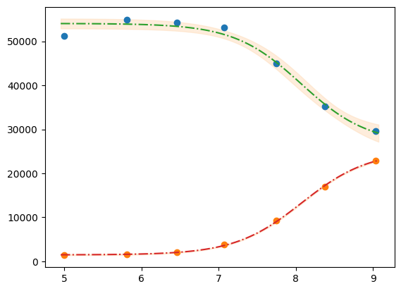
Please mind the difference in the uncertainty between the 2 label blocks.
[35]:
def tit_pH2(x, S0_1, S0_2, S1_1, S1_2, K):
y1 = (S0_1 + S1_1 * 10 ** (K - x)) / (1 + 10 ** (K - x))
y2 = (S0_2 + S1_2 * 10 ** (K - x)) / (1 + 10 ** (K - x))
# return y1, y2
return np.r_[y1, y2]
tit_model = lmfit.Model(tit_pH2)
tit_model.set_param_hint("K", value=7.0, min=2.0, max=12.0)
tit_model.set_param_hint("S0_1", value=df.y1[0], min=0.0)
tit_model.set_param_hint("S0_2", value=df.y2[0], min=0.0)
tit_model.set_param_hint("S1_1", value=df.y1.iloc[-1], min=0.0)
tit_model.set_param_hint("S1_2", value=df.y2.iloc[-1], min=0.0)
pars = tit_model.make_params()
# res = tit_model.fit([df.y1, df.y2], pars, x=df.x)
res = tit_model.fit(np.r_[df.y1, df.y2], pars, x=df.x)
print(res.fit_report())
[[Model]]
Model(tit_pH2)
[[Fit Statistics]]
# fitting method = leastsq
# function evals = 37
# data points = 14
# variables = 5
chi-square = 12471473.3
reduced chi-square = 1385719.25
Akaike info crit = 201.798560
Bayesian info crit = 204.993846
R-squared = 0.99794717
[[Variables]]
S0_1: 26601.3458 +/- 1425.69913 (5.36%) (init = 29657)
S0_2: 25084.4189 +/- 1337.07982 (5.33%) (init = 22885)
S1_1: 54034.5806 +/- 627.642479 (1.16%) (init = 51205)
S1_2: 1473.57871 +/- 616.944649 (41.87%) (init = 1358)
K: 8.07255029 +/- 0.07600777 (0.94%) (init = 7)
[[Correlations]] (unreported correlations are < 0.100)
C(S0_1, K) = -0.6816
C(S0_2, K) = +0.6255
C(S0_1, S0_2) = -0.4264
C(S1_1, K) = -0.3611
C(S1_2, K) = +0.3161
C(S0_2, S1_1) = -0.2259
C(S0_1, S1_2) = -0.2155
C(S1_1, S1_2) = -0.1141
[36]:
dely = res.eval_uncertainty(x=xfit)
[37]:
def fit_pH(fp):
df = pd.read_csv(fp)
def tit_pH(x, SA, SB, pK):
return (SB + SA * 10 ** (pK - x)) / (1 + 10 ** (pK - x))
mod = lmfit.Model(tit_pH)
pars = mod.make_params(SA=10000, SB=7e3, pK=7)
result = mod.fit(df.y2, pars, x=df.x)
return result, df.y2, df.x, mod
# r,y,x,model = fit_pH("/home/dati/ibf/IBF/Database/Random mutag results/Liasan-analyses/2016-05-19/2014-02-20/pH/dat/C12.dat")
r, y, x, model = fit_pH("../../tests/data/H04.dat")
xfit = np.linspace(x.min(), x.max(), 50)
dely = r.eval_uncertainty(x=xfit) * 1
best_fit = r.eval(x=xfit)
plt.plot(x, y, "o")
plt.plot(xfit, best_fit, "-.")
plt.fill_between(xfit, best_fit - dely, best_fit + dely, color="#FEDCBA", alpha=0.5)
r.conf_interval(sigmas=[2])
print(r.ci_report(with_offset=False, ndigits=2))
99.73% 95.45% 68.27% _BEST_ 68.27% 95.45% 99.73%
SA:2338.404511.625450.156052.536642.137512.329321.96
SB:33406.9634609.8235170.9935544.4435920.0736492.8937756.24
pK: 6.47 6.60 6.66 6.70 6.74 6.80 6.93
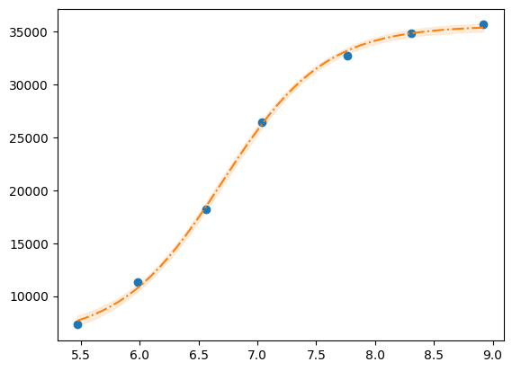
[38]:
g = r.plot()
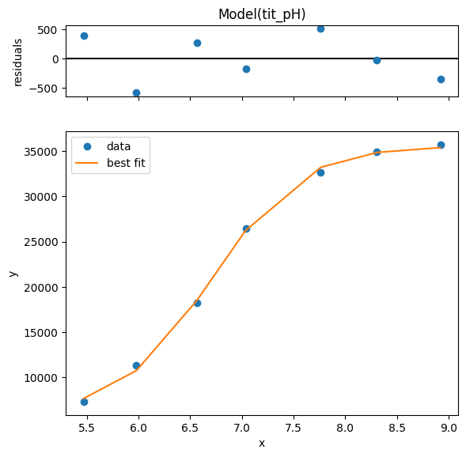
[39]:
print(r.ci_report())
99.73% 95.45% 68.27% _BEST_ 68.27% 95.45% 99.73%
SA:-3714.13150-1540.91238-602.378536052.53269+589.59734+1459.78928+3269.42485
SB:-2137.47758-934.62678-373.4502035544.44185+375.62906+948.44608+2211.79840
pK: -0.23398 -0.10021 -0.03976 6.70123 +0.03971 +0.09989 +0.23227
1.3.5. using clophfit.binding#
[40]:
dictionary = df.loc[:, ["y1", "y2"]].to_dict(orient="series")
dictionary = {key: value.to_numpy() for key, value in dictionary.items()}
ds = Dataset(df.x.to_numpy(), dictionary, True)
f_res2 = fit_binding_glob(ds, True)
f_res2.figure
[40]:
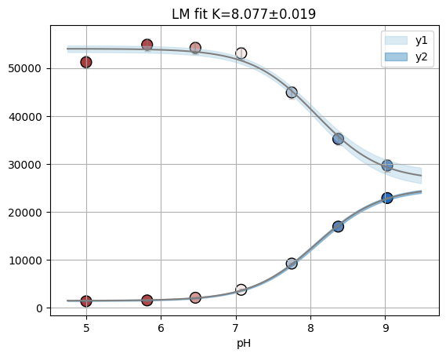
[41]:
emcee_res2 = f_res2.mini.emcee()
plot_emcee(emcee_res2.flatchain)
100%|██████████████████████████████████████████████████████████████████████████████████████████████████████████████████████████████████████████████████████| 1000/1000 [00:14<00:00, 66.92it/s]
The chain is shorter than 50 times the integrated autocorrelation time for 5 parameter(s). Use this estimate with caution and run a longer chain!
N/50 = 20;
tau: [49.26348026 49.85368936 56.0758159 42.12187094 47.14826225]
[41]:
(<Figure size 1180x1180 with 25 Axes>, [7.86, 8.1])
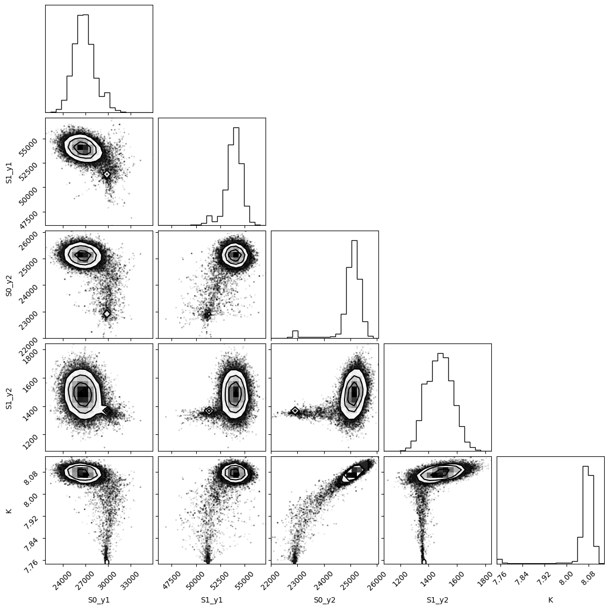
1.4. Model: example 2P Cl–ratio#
[42]:
def fit_Rcl(fp):
df = pd.read_table(fp)
def R_Cl(cl, R0, R1, Kd):
return (R1 * cl + R0 * Kd) / (Kd + cl)
mod = lmfit.Model(R_Cl)
pars = mod.make_params(R0=0.8, R1=0.05, Kd=10)
result = mod.fit(df.R, pars, cl=df.cl)
return result, df.R, df.cl, mod
r, y, x, model = fit_Rcl("../../tests/data/ratio2P.txt")
xfit = np.linspace(x.min(), x.max(), 50)
dely = r.eval_uncertainty(cl=xfit) * 3
best_fit = r.eval(cl=xfit)
plt.plot(x, y, "o")
plt.grid()
plt.plot(xfit, best_fit, "-.")
plt.fill_between(xfit, best_fit - dely, best_fit + dely, color="#FEDCBA", alpha=0.5)
r.conf_interval(sigmas=[2])
print(r.ci_report(with_offset=False, ndigits=2))
99.73% 95.45% 68.27% _BEST_ 68.27% 95.45% 99.73%
R0: 0.49 0.58 0.60 0.61 0.62 0.64 0.73
R1: -0.30 -0.01 0.03 0.04 0.06 0.09 0.20
Kd: 2.95 10.09 12.51 13.66 14.91 18.49 59.97
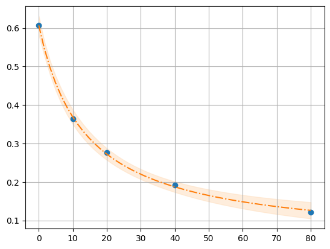
[43]:
emcee_kws = dict(is_weighted=False, progress=False)
emcee_params = r.params.copy()
emcee_params.add(
"__lnsigma", value=np.log(0.1), min=np.log(0.000001), max=np.log(2000.0)
)
result_emcee = model.fit(
data=y,
cl=x,
params=emcee_params,
method="emcee",
nan_policy="omit",
fit_kws=emcee_kws,
)
lmfit.report_fit(result_emcee)
The chain is shorter than 50 times the integrated autocorrelation time for 4 parameter(s). Use this estimate with caution and run a longer chain!
N/50 = 20;
tau: [49.84902134 43.44317898 44.43887952 91.23357575]
[[Fit Statistics]]
# fitting method = emcee
# function evals = 100000
# data points = 5
# variables = 4
chi-square = 0.82881441
reduced chi-square = 0.82881441
Akaike info crit = -0.98598469
Bayesian info crit = -2.54823304
R-squared = -4.83198987
[[Variables]]
R0: 0.60611287 +/- 0.01557085 (2.57%) (init = 0.6071065)
R1: 0.04149025 +/- 0.02362505 (56.94%) (init = 0.04390399)
Kd: 13.9445189 +/- 2.39070630 (17.14%) (init = 13.66125)
__lnsigma: -4.61321296 +/- 1.23730075 (26.82%) (init = -2.302585)
[[Correlations]] (unreported correlations are < 0.100)
C(R1, Kd) = -1.0000
C(R0, __lnsigma) = -0.1074
[44]:
plot_emcee(result_emcee)
WARNING:root:Too few points to create valid contours
WARNING:root:Too few points to create valid contours
WARNING:root:Too few points to create valid contours
[44]:
(<Figure size 970x970 with 16 Axes>, [])
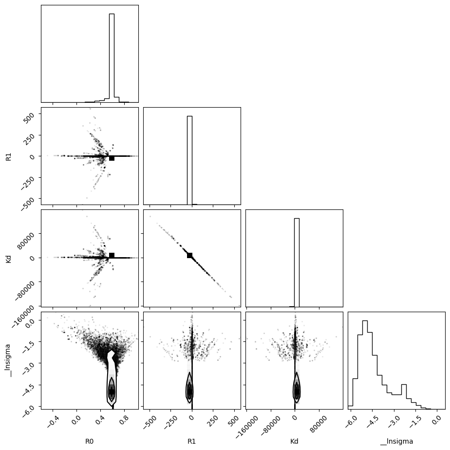
[45]:
highest_prob = np.argmax(result_emcee.lnprob)
hp_loc = np.unravel_index(highest_prob, result_emcee.lnprob.shape)
mle_soln = result_emcee.chain[hp_loc]
print("\nMaximum Likelihood Estimation (MLE):")
print("----------------------------------")
for ix, param in enumerate(emcee_params):
print(f"{param}: {mle_soln[ix]:.3f}")
quantiles = np.percentile(result_emcee.flatchain["Kd"], [2.28, 15.9, 50, 84.2, 97.7])
print(f"\n\n1 sigma spread = {0.5 * (quantiles[3] - quantiles[1]):.3f}")
print(f"2 sigma spread = {0.5 * (quantiles[4] - quantiles[0]):.3f}")
Maximum Likelihood Estimation (MLE):
----------------------------------
R0: 0.607
R1: 0.045
Kd: 13.590
__lnsigma: -5.527
1 sigma spread = 1.969
2 sigma spread = 107.071
[46]:
print_emcee(res_emcee)
---------------------------------------------------------------------------
NameError Traceback (most recent call last)
Cell In[46], line 1
----> 1 print_emcee(res_emcee)
NameError: name 'print_emcee' is not defined